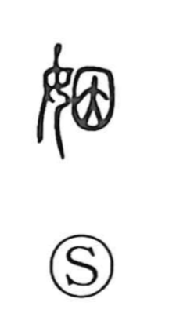

姻

Uncategorized
Kun: | On: in
marriage ・ marital ties ・ relatives by marriage ・ to marry into
Explanation
姻 is a phono-semantic compound formed with the woman radical 女 and 因 as its phonetic core. Shirakawa understands 因 to convey the sense of continuation and repetition—things lying one upon another—and it also provides the on reading in. He links this to the social reality of ancient China, where marriages were repeatedly exchanged among designated clans. From that patterned, ongoing exchange arose the character’s meanings: to marry into another family, and by extension the relatives bound together through such marital ties.